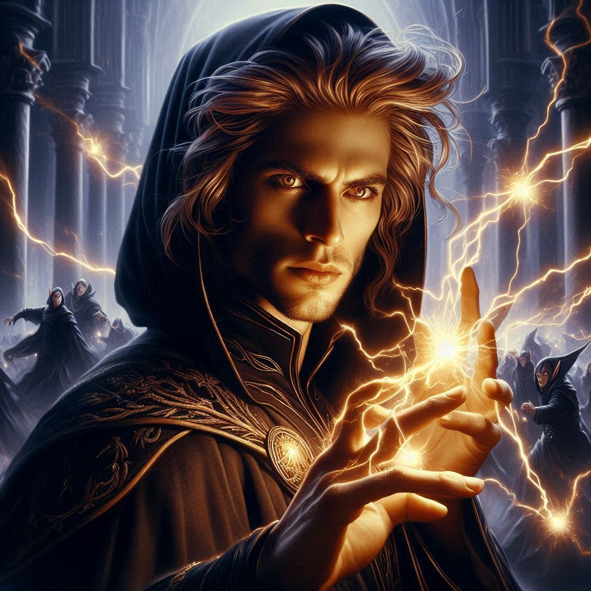
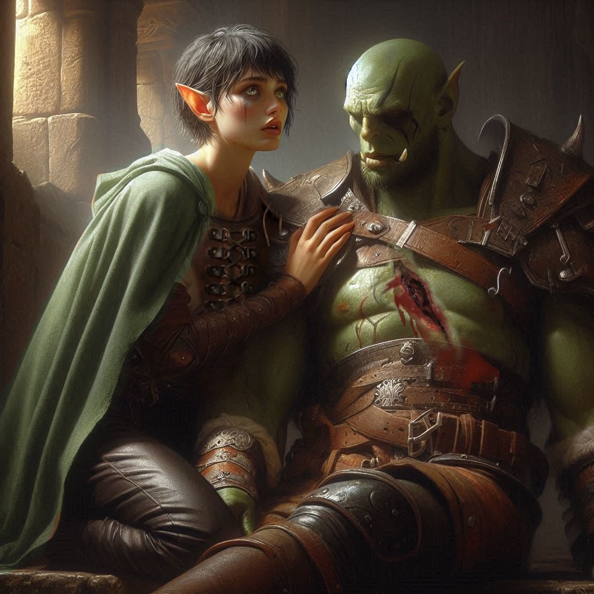

The Return of Jorsh
The heat of battle blazes around you, firelight reflecting off the dark stone walls of the Temple of Yaldaboath. The air is thick with the acrid stench of burnt flesh, sweat, and blood. Your pulse races as your boots pound against the cold, uneven floor. Every step carries you closer to Baider, your adoptive father and the man who has always been too stubborn to back down.
But Varis stands between you and him. The dark elf prince chants in a guttural, ancient language, his hands raised as black tendrils of magic snake toward the massive obsidian portal at the temple's center. The runes etched along the portal's frame glow with ominous crimson light, pulsing in time with his incantation.
"Baider!" you shout, your voice cracking with desperation. He's fighting valiantly, his hammer swinging in wide arcs, but you can see the wear in his movements.
Behind you, the clash of blades echoes through the temple as Elias and Onyx hold the line near the sacrificial altar. Dark elves swarm around them, a writhing tide of shadowy armor and cruel weapons.
An arrow whizzes past your ear, and you duck instinctively. You feel the burn of adrenaline in your veins as you draw your sword. The steel hums with energy as you charge forward, cutting through the dark elves that block your path.
"Go, Kira!" Elias calls out, his voice strained. He's locked in combat with a particularly vicious dark elf wielding dual scimitars. "We'll hold them off!"
You grit your teeth, sidestepping a clumsy lunge from a dark elf warrior, and drive your blade into his side. The cold steel slides free with sickening ease, but there’s no time to dwell on the kill.
Ahead, Baider falters. A jagged bolt of black energy from Varis’s outstretched hand strikes him square in the chest. He falls to one knee, his hammer slipping from his grasp and clattering to the ground.
"No!"
You sprint forward, slashing through the last dark elf blocking your path. The battlefield narrows to just you, Baider, and Varis.
The dark elf prince turns to face you, his lips curling into a cruel smile. "Little ranger," he sneers. "You think you can stop this? You’re too late."
With a roar, you leap at him, blades raised, but Varis flicks his wrist, and a wall of magical force slams into you, sending you sprawling to the ground. The impact jars your bones, but you force yourself to your feet, refusing to yield.
As you prepare to charge again, the air buzzes with electricity. A glowing portal shimmers to life beside the altar, and a figure steps through. Jorsh.
For a moment, time seems to freeze. His long blond hair is disheveled, his piercing eyes alight with determination, and his hands already crackle with magical energy. His voice is steady as he mutters an incantation, and bolts of lightning erupt from his fingertips, tearing through the ranks of dark elves like paper.
"Stay out of my way, Kira," Jorsh growls as he unleashes a fiery explosion that incinerates half the room. "I’m here for Varis."
The battle turns into chaos. The remaining dark elves scatter, desperately trying to avoid Jorsh’s onslaught. You seize the opportunity to close the distance to Baider.
"Baider!" you gasp, dropping to your knees beside him. Blood seeps from the jagged wound in his chest, staining his armor. His face is pale, his breaths shallow.
"Kira..." he rasps, his eyes flickering open. "You’re... too stubborn... just like me."
You press your hands to the wound, desperately trying to stop the bleeding. "Don’t talk like that. You’re going to be fine."
But you’re lying, and you both know it.
"Onyx..." Baider whispers. "He's here. On the altar. Save... him...'"
From across the room, a thunderous crack shakes the temple. The portal at the center of the room begins to expand, its edges swirling with chaotic energy. You glance up and see Onyx struggling against the pull of the portal. His old frame is no match for the growing magical vortex, and he’s being dragged toward it.
Jorsh and Varis are locked in a fierce magical duel near the altar, oblivious to the danger threatening to consume them all.
The world seems to blur around you as your mind races. Baider is dying in your arms, his lifeblood slipping away with every passing second. But Onyx—the portal will consume him if you don’t act now.